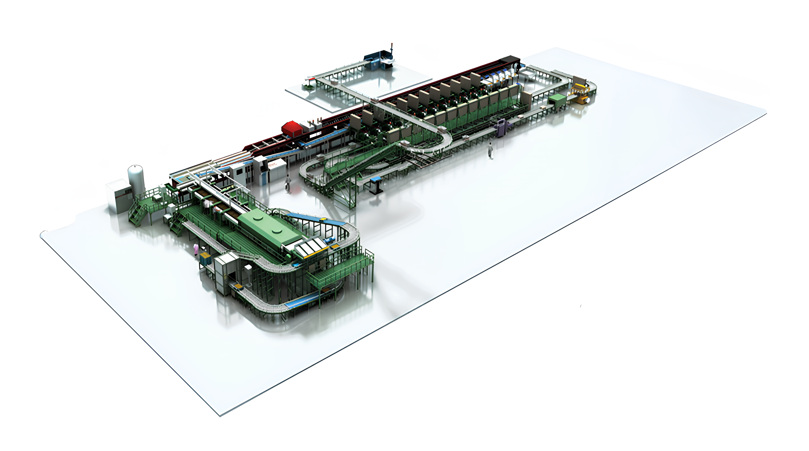

— A quiet challenge, from Shiga to the world.
1900年の創業以来、客観的に、正確に「はかる」ことを命題として歩んできた近江度量衡。農産物から工業製品まで——あらゆる現場で今も使われ続けている、現在進行形の技術力と誠実さ。「はかる」という仕事を通じて、日本と世界の社会を確かに支え続けること。それが、126年間変わらない私たちの使命です。
企業を通じた社会貢献と、従業員の生活向上。126年間、地域とともに歩んできた誠実さを守り続ける。
技術発展と優良品の製造。「測る」を通じて、確かさを社会に届けるための研鑽を絶やさない。
職場の繁栄に向けた互助・協力。一人ひとりが支え合いながら、確かなものづくりを実現する。
1900年の創業から現在まで、時代とともに進化してきた近江度量衡の歩みをダイジェストでご紹介します。
126年ヒストリーを見る →地に足のついた仕事のリアル・職場環境・社員の声——飾らず正直に。あなたの確かな仕事で、豊かな未来を担う力になる。
※ エントリーは採用サイト（/recruit/entry/）にて受付
現場・設計・営業——それぞれの視点で語る、近江度量衡の仕事。